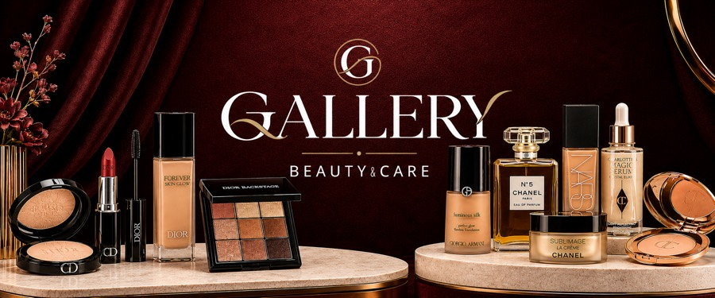

🚚 משלוח חינם מעל ₪299
·
⏱ אספקה עד 72 שעות
العربية

למומלצים שלנו
למומלצים שלנו
⌕
✕
אודות
צור קשר
משלוחים
החזרות
תקנון
פרטיות
משלוח חינם
בקנייה מעל ₪299
החזרות חינם
עד 30 יום
מוצרים מקוריים
100% מקורי
המותגים האהובים
לכל המותגים ›
מומלץ בשבילך
לכל המוצרים ›
כל המוצרים
🏷️
כל המותגים
▾
♥ המועדפים שלי
↺ נקה הכל
מיון: מומלץ
מחיר: מהנמוך לגבוה
מחיר: מהגבוה לנמוך
שם: א׳–ת׳
צפה בהזמנה ←
↑
צריכים עזרה? כתבו לנו
✕
כתבו את ההודעה שלכם ונחזור אליכם מיד בוואטסאפ.
שלח בוואטסאפ
✕
✕
ההזמנה שלי
החל
פרטי המזמין
קראתי ואני מסכים/ה ל
תקנון
ול
מדיניות הפרטיות
שלם עכשיו 💳
שלח הזמנה לאישור (וואטסאפ)
ההזמנה תיפתח ב-WhatsApp עם מספר ההזמנה
✕
✕
בחירת מותג
⌕
בית
חיפוש
מועדפים
עגלה
וואטסאפ